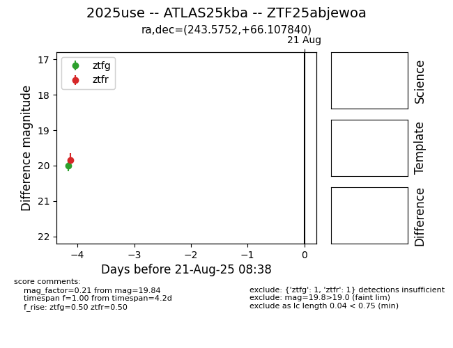

Target 2025use at 2025-08-21 08:38, see:
FINK: fink-portal.org/ZTF25abjewoa
Lasair: lasair-ztf.lsst.ac.uk/objects/ZTF25abjewoa
ALeRCE: alerce.online/object/ZTF25abjewoa
TNS: wis-tns.org/object/2025use
YSE: ziggy.ucolick.org/yse/transient_detail/2025use
alt names
ZTF25abjewoa (ztf,alerce)
2025use (tns,yse)
ATLAS25kba (atlas)
coordinates:
equatorial (ra, dec) = (243.5752,+66.10784)
galactic (l, b) = (98.7088,+40.17633)
photometry
last ztfg=20.00, ztfr=19.84
1 ztfg, 1 ztfr detections
